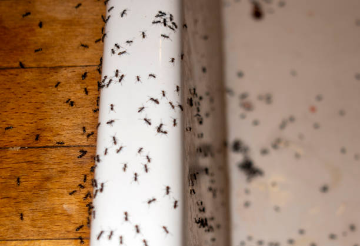

Johnson Lane Nevada
info@pemdempestcontrol.xyz
Johnson Lane Nevada
info@pemdempestcontrol.xyz

Leading pest control services in Johnson Lane Nevada . We specialize in eliminating termites, rodents, and more. Fast response, expert care, and competitive rates. Trust us to safeguard your property. Contact us today!
Click Here To Call Us (877) 848-1711Are you struggling with pests in Johnson Lane Nevada ? Pemdem Pest Control is here to help you regain control of your home or business. We specialize in eliminating a wide range of pests, including termites, rodents, ants, bed bugs, and more, using safe and effective methods tailored to your unique situation.
At Pemdem Pest Control, we understand the importance of a pest-free environment. Pests can cause significant damage to your property, pose health risks, and disrupt your daily life. That’s why our expert technicians are equipped with the latest tools and techniques to quickly and efficiently eliminate any infestation. We offer both residential and commercial pest control services in Johnson Lane Nevada ensuring that your property remains protected year-round.
Our approach to pest control is both thorough and environmentally responsible. We use eco-friendly products that are safe for your family, pets, and the environment. Our services include a detailed inspection, customized treatment plans, and ongoing monitoring to prevent future infestations. Whether you’re dealing with a current problem or looking to safeguard your property from potential threats, we have the expertise to deliver results.
Don’t let pests take over your property in Johnson Lane Nevada . Contact Pemdem Pest Control today for a free inspection and discover why we are the trusted choice for pest control in the area. Your satisfaction is our top priority, and we are committed to providing you with the highest quality service. Protect your home or business with our reliable and professional pest control solutions.
Residential & commercial Pest Control
Quality services at affordable prices
Immediate 24/ 7 emergency services


Identifying a pest infestation early is crucial for effective control and prevention. At Pemdem Pest Control, we help homeowners in Johnson Lane Nevada recognize the signs of an infestation to address the issue promptly. Here’s how you can tell if pests are invading your home.
Unusual Sightings
One of the first signs of a pest infestation is spotting the pests themselves. Whether it’s ants marching along your kitchen counter, rodents scurrying in the attic, or cockroaches appearing in your pantry, seeing pests is a clear indicator of a problem. If you notice these pests consistently, it’s time to take action.
Droppings and Waste
Pests often leave behind droppings or waste products, which can be found in hidden areas like under sinks, behind appliances, or in the attic. Rodent droppings, cockroach feces, and bed bug shells are common indicators of an infestation. Pay attention to these signs, as they can help confirm the presence of pests.
Damaged Property
Chewed wires, gnawed wood, and damaged insulation are other signs of a pest problem. Termites, rodents, and other pests can cause significant damage to your property, often leaving visible evidence. If you notice unexplained damage, it might be due to an infestation.
Strange Noises
Hearing scratching, scurrying, or buzzing noises, especially at night, can indicate pests like rodents or insects are active within your walls or ceilings. These noises are often a sign that pests have made themselves at home in your living spaces.
Unpleasant Odors
Foul or musty odors can be a result of pest infestations, particularly with rodents or cockroaches. The smell often comes from their droppings, urine, or decomposing bodies. If you detect persistent, unpleasant smells, it’s worth investigating further.
If you suspect a pest infestation in Johnson Lane Nevada Pemdem Pest Control is here to help. Our expert team can identify the problem, provide effective solutions, and ensure your home remains pest-free. Contact us today for a thorough inspection and reliable pest control services!
Residential & commercial Pest Control
Quality services at affordable prices
Immediate 24/ 7 emergency services
While bees are vital pollinators, their presence near homes can often lead to risky encounters. Our bee control services at Pest Control emphasize humane detention and relocation strategies. Our trained specialists assess the situation and utilize methods that prioritize bee safety, ensuring minimal disruption to the environment. If bees are posing a problem in your area, we work with local beekeepers to ensure the bees are safely relocated rather than exterminated. Trust us for responsible bee control services in Johnson Lane Nevada that protect both your home and local ecosystems.

Prevention is the best strategy when it comes to pest management. Our pest prevention services at Pest Control include comprehensive assessments and customized plans designed to minimize pest risks in your property. We educate our clients on preventative measures and implement solutions that keep pests at bay, protecting your home or business year-round. With our proactive approach, you can enjoy peace of mind knowing that we prioritize your safety and comfort. Choose Pest Control for effective pest prevention services to maintain a pest-free environment .
Quality pest control shouldn't break the bank. Our affordable pest control services combine effective treatment with budget-friendly solutions. We understand that pest infestations can be unexpected, which is why we offer flexible pricing and plans tailored to your needs and financial constraints. Our commitment to quality service ensures that even on a budget, you receive the best pest management without compromise.

Encounters with wildlife can create unusual challenges for property owners. At Pest Control, we specialize in wildlife control services, safely removing unwanted animals and preventing future intrusions. Our team is trained to handle various wildlife species, ensuring they are relocated humanely and in compliance with local regulations. We implement exclusion techniques to keep wildlife from entering your property again. Choose us for expert wildlife control services in Johnson Lane Nevada addressing your concerns with professionalism and care.

Effective pest control requires a systematic approach, and our pest management programs at Pest Control are designed just for that. These comprehensive programs include regular inspections, treatments, and preventative measures tailored to meet your specific needs. Our experienced technicians analyze your property and recommend a proactive strategy, ensuring that we manage pest issues before they become problems. Trust us for long-term results and consistent monitoring in Johnson Lane Nevada with our expertly designed pest management programs.
When looking for a local exterminator, trust is essential. Our team of local exterminators in Johnson Lane Nevada is committed to serving our community with integrity and professionalism. We understand the unique pest challenges that local residents face and have developed targeted solutions to effectively manage and eliminate those pests. By choosing us, you are supporting local business and accessing top-quality service that puts your needs first.

Protecting your home from pests is more important than ever. Our home pest control services focus on creating safe and comfortable environments for you and your family. From initial inspection to targeted treatments and ongoing monitoring, we provide comprehensive solutions tailored to your household. With a focus on eco-friendly and effective practices, our qualified professionals are here to help you maintain a pest-free home.

Running a business requires focus and attention to numerous details, including pest control. Our pest control for businesses is designed to meet the unique needs of various industries, from restaurants to retail spaces. At Pest Control, we understand that a pest issue can damage your reputation and lead to costly interruptions. We create customized pest management plans to address the specific requirements of your business while ensuring minimal disruption to your operations. Our experienced technicians conduct thorough inspections and implement effective treatments that protect your space and promote a pest-free environment. Choose us for reliable pest control solutions tailored for your business's success.
Years Experience
Expert Technicians
Satisfied Clients
Compleate Projects
At Pemdem Pest Control, we know that dealing with pests can be both stressful and disruptive. That's why we are dedicated to providing top-notch pest control services across Johnson Lane Nevada . Our commitment to quality and customer satisfaction is what makes us stand out in the industry.
Our team of licensed and highly trained technicians is equipped with the latest tools and techniques to tackle any pest issue you might be facing. Whether it’s termites, rodents, bed bugs, or any other pest, we have the expertise to manage it effectively. We tailor our solutions to meet your specific needs, ensuring that you receive the most efficient and durable results.
We prioritize the safety of your family, pets, and the environment by using eco-friendly products and methods. Pemdem Pest Control is committed to minimizing environmental impact while delivering powerful pest management solutions that are both safe and effective.
Our services include comprehensive inspections, customized treatment plans, and ongoing monitoring to prevent future infestations. We don’t just address the immediate problem; we work to ensure that your property remains protected from pests in the long term.
Customer satisfaction is at the heart of what we do. We provide prompt, reliable service and are always available to answer your questions and address any concerns you may have. At Pemdem Pest Control, we strive to offer the best possible experience and results.
Choose Pemdem Pest Control in Johnson Lane Nevada for effective, eco-friendly, and customer-focused pest management solutions. Contact us today to schedule your free inspection and take the first step toward a pest-free environment.
Finding effective pest control services near you is crucial for maintaining a safe and healthy environment. At Pest Control, we understand that the presence of pests can cause significant stress and health risks. Our local team specializes in targeting common pests such as ants, roaches, and termites, offering quick and efficient solutions. With years of experience and dedicated service, we ensure that your home and business are pest-free. Choosing us means choosing a reliable partner that cares about your comfort and safety.
Termites can cause devastating damage to your property if left untreated. Our expert termite control services in Johnson Lane Nevada are designed to effectively eradicate these destructive pests before they can wreak havoc on your home or business. We use advanced techniques and eco-friendly products to ensure that your space remains protected. Our certified specialists conduct thorough inspections and provide customized treatment plans. Trust us to safeguard your property and provide peace of mind.
Rodents can pose serious health risks and cause significant property damage. Our rodent control services ensure that your space remains safe and hygienic. At Pest Control, we take a comprehensive approach to rodent control. Our team will assess the premises for entry points, nests, and food sources before implementing targeted traps and deterrents. This strategic approach not only eliminates current infestations but also prevents future ones. We pride ourselves on transparency, providing detailed reports and open communication throughout the process. You deserve a rodent-free environment, and we are here to deliver just that.
Bed bugs are notoriously difficult to eradicate, and DIY methods seldom yield positive results. Our specialized bed bug extermination services at Pest Control utilize industry-leading techniques such as heat treatment and targeted pesticide application to guarantee removal of these persistent pests. Our trained inspectors will determine the extent of the infestation and devise a customized treatment plan that suits your needs. We prioritize your health and safety, using eco-friendly and low-toxicity options whenever possible. Trust us for effective bed bug solutions and experience a peaceful night’s sleep once again.
Ant colonies can infiltrate homes and businesses, creating nuisances and health risks. Pest Control specializes in effective ant extermination services that target various species, including fire ants, carpenter ants, and sugar ants. Our method involves identifying ant pathways, nesting sites, and using appropriate treatments that eliminate ants at the source. Our trained professionals are dedicated to ensuring long-term solutions, so you won’t face recurring infestations. When you choose us, you’re choosing a team that stands by their commitment to customer satisfaction, environmental stewardship, and effective pest management .
Cockroaches are not only unpleasant but can also pose health risks. Our cockroach extermination services in Johnson Lane Nevada are efficient and targeted, using the latest technology and methods to eradicate these pests from your property. We conduct detailed inspections, finding the root of the infestation and treating accordingly. Our focus on safety and effectiveness ensures that you can live worry-free. Partner with us for a cleaner and healthier environment.
Protecting your home from pests is vital for your family's health and safety. Our residential pest control services in Johnson Lane Nevada are designed to provide comprehensive coverage against various pests, including spiders, termites, and rodents. We create a tailored pest management program that fits your needs, utilizing eco-friendly solutions to ensure the safety of your loved ones and pets. With a commitment to quality and service, we are your trusted partners in maintaining a pest-free home.
A pest problem in your business can mean more than inconvenience—it can impact your reputation and revenue. At Pest Control, we understand the unique challenges that businesses face in maintaining a pest-free environment. Our commercial pest control services provide customized solutions that align with your specific industry requirements, whether it be retail, hospitality, or food service. Our team conducts thorough inspections and implements proactive strategies to ensure that your business meets health and safety standards. With our commitment to professionalism, confidentiality, and comprehensive pest management programs, we make it easy for you to focus on your business while we take care of pest problems.
If you prefer eco-friendly solutions, our organic pest control services in Johnson Lane Nevada are just what you need. We believe in protecting the environment while effectively managing pests in your home or business. Our organic products are safe for children and pets, offering you peace of mind while ensuring that pests are eliminated. Choose us for a sustainable approach that aligns with your values while keeping your space pest-free.
The presence of mosquitoes can turn your outdoor spaces into no-fly zones. Our mosquito control services in Johnson Lane Nevada are designed to make your yard enjoyable again. At Pest Control, we employ a multi-faceted approach to mosquito management, which includes inspections, treatments, and ongoing monitoring. Our trained professionals use the latest techniques, such as barrier sprays and larvicides, to eliminate mosquitoes at all life stages. Enjoy your summer evenings without the constant threat of bites by partnering with us to create a mosquito-free environment. With our commitment to quality and customer satisfaction, we take the time to ensure every treatment is tailored to your property’s specific needs.
Fleas can quickly become a problem, particularly if you have pets at home. Our flea extermination services focus on eradicating adult fleas while disrupting their life cycle to prevent future infestations. We use specialized treatments safe for pets and humans, ensuring a thorough solution to your flea issues. Count on our skilled team for fast, effective, and reliable flea control that restores comfort to your home.
While some spiders are harmless, the presence of unwanted arachnids can cause discomfort. Our spider extermination services focus on understanding the types of spiders in your property and using safe methods to eliminate them. We also implement preventive measures to ensure they don't return. Our experienced team is dedicated to providing a comprehensive solution that puts your mind at ease and creates a pleasant living environment.
In a world increasingly aware of environmental issues, our eco-friendly pest control services stand out. At Pest Control, we are committed to providing pest control that is both effective and sustainable. Our eco-friendly methods include the use of natural pesticides, traps, and the practice of Integrated Pest Management (IPM). We analyze the specific conditions of your property to develop a pest management strategy that minimizes environmental impact while ensuring successful pest eradication. Eco-friendly pest control not only protects your home but also contributes to a healthier planet.
Searching for the best pest control companies can be overwhelming, but at Pest Control, we strive to set ourselves apart. Our decades of experience in pest management, coupled with a commitment to utilizing the latest techniques and technologies, positions us as leaders in the industry. Our customer-focused approach means we listen to your specific concerns, tailoring our services to meet your unique needs. With our glowing customer reviews and high success rates, it’s no wonder homeowners and businesses choose us as their trusted pest control solution.
Pest problems can occur unexpectedly, and when they do, you need immediate assistance. Our emergency pest control services at Pest Control prioritize quick response times to ensure that pest emergencies are handled effectively. Whether you’re dealing with a sudden rodent problem or an unexpected swarm of insects, our trained professionals are ready to act swiftly. We provide thorough assessments and deploy appropriate treatments to minimize damage and restore safety to your property. Trust Pest Control for reliable emergency pest control services whenever you need us most .
Preventive pest control begins with a thorough inspection. Our pest inspection services in Johnson Lane Nevada assess potential problem areas and existing infestations with pinpoint accuracy. Our trained professionals examine your property comprehensively, identifying entry points and conducive conditions for pests. We provide detailed reports and recommendations for prevention and treatment. Trust our expertise to keep your property protected and informed.
Wasps can be aggressive, and their stings can cause severe reactions. If you have a wasp nest on your property, it’s crucial to seek professional wasp removal services immediately. At Pest Control, we specialize in safe and effective wasp removal . Our trained technicians follow strict safety protocols to ensure that the removal process is executed smoothly and efficiently. We utilize targeted treatments to eliminate the nest while minimizing risks to bystanders and pets. After we’ve removed the wasps, we also provide guidance on how to prevent future infestations. Choose us for expert wasp removal to ensure your safety and peace of mind.
After a professional pest control treatment, it's important to follow certain steps to ensure the effectiveness of the treatment and maintain a pest-free environment. At Pemdem Pest Control, serving Johnson Lane Nevada we provide expert advice to help you manage your space effectively post-treatment.
Follow Safety Instructions
Your pest control technician will provide specific safety instructions, including when it’s safe to re-enter treated areas. Follow these guidelines carefully to avoid any health risks. In many cases, you'll need to stay out of the treated areas for a specified period to allow the treatment to fully take effect.
Avoid Cleaning Immediately
Refrain from cleaning or wiping down surfaces immediately after treatment. This can interfere with the effectiveness of the pesticides or treatments used. Typically, you should wait at least 24-48 hours before resuming normal cleaning routines. However, always follow the specific instructions provided by your pest control professional.
Monitor for Continued Activity
Keep an eye out for any remaining pest activity or signs of new infestations. If you notice pests or signs of a problem within the follow-up period suggested by your technician, contact Pemdem Pest Control immediately for additional treatment or advice.
Maintain Preventive Measures
To prevent future infestations, continue practicing good sanitation and maintenance habits. Seal cracks, keep food stored properly, and address any moisture issues that might attract pests.
Dispose of Contaminated Materials
If pests were present in areas with food or other sensitive materials, dispose of or clean these items according to the advice given by your pest control provider. This helps ensure that any residual pests or contaminants are effectively removed.
For comprehensive pest control services and expert advice in Johnson Lane Nevada trust Pemdem Pest Control. Contact us today to ensure your home remains pest-free and safe after treatment!
Johnson Lane is a census-designated place (CDP) in the south side of the Carson City metropolitan area in Douglas County, Nevada, United States. Its population was 6,490 at the 2010 census.
Yes, Pemdem Pest Control offers a satisfaction guarantee on our pest control services . If pests return, we will come back at no extra charge.
Yes, Pemdem Pest Control uses environmentally friendly pest control products in Johnson Lane Nevada ensuring minimal impact on the environment while eliminating pests.
Yes, Pemdem Pest Control uses safe, targeted treatments that won’t harm your garden or outdoor plants.
For ongoing protection, Pemdem Pest Control suggests quarterly pest control services but the frequency can vary based on the pest problem.
You should start seeing results within a few days of Pemdem Pest Control’s treatment but it may take longer for full elimination depending on the pest.
Pemdem Pest Control handles a wide range of pests in Johnson Lane Nevada including ants, termites, bed bugs, rodents, spiders, cockroaches, and more.
Pemdem Pest Control recommends keeping wood away from your home’s foundation, repairing leaks, and scheduling regular termite inspections .
In most cases, you don’t need to leave your home during Pemdem Pest Control's treatment . We will inform you if it’s necessary based on the treatment type.
Signs of bed bugs include small reddish-brown stains on bedding, itchy welts on your skin, and visible bugs or eggs in mattress seams or furniture.
To prevent pests from returning Pemdem Pest Control recommends sealing entry points, keeping food sealed, and maintaining a clean environment.
The cost of pest control depends on the type of pest, the severity of the infestation, and the size of the property. Contact Pemdem Pest Control for a customized quote.
Scheduling a pest control service with Pemdem Pest Control is easy. You can contact us via phone, email, or book directly through our website.
Yes, Pemdem Pest Control offers specialized termite control services to protect your home from termite damage.
Yes, Pemdem Pest Control offers bundled pest control services in Johnson Lane Nevada to address multiple pest issues in one visit for added convenience and savings.
The length of a pest control treatment depends on the type of pest and the size of the property. Most treatments take between 30 minutes to 2 hours.
Yes, Pemdem Pest Control offers outdoor pest control services in Johnson Lane Nevada including treatments for mosquitoes, ticks, and other outdoor pests.
Pest control is effective year-round but spring and summer are peak seasons for pests. Pemdem Pest Control offers services to protect your home in every season.
Absolutely. Pemdem Pest Control uses eco-friendly and safe pest control solutions in Johnson Lane Nevada ensuring the safety of your pets and children.
Yes, Pemdem Pest Control provides tailored pest control services for restaurants and other food service establishments in Johnson Lane Nevada to ensure compliance and safety.
Common signs of a rodent infestation in Johnson Lane Nevada include droppings, chewed wires or furniture, scratching sounds, and nests made from shredded materials.
Yes, Pemdem Pest Control specializes in bed bug extermination services using effective treatments to eliminate bed bugs from your home.
Yes, Pemdem Pest Control provides same-day pest control services subject to availability. Call us to schedule an appointment.
Yes, Pemdem Pest Control provides commercial pest control services helping businesses maintain a pest-free environment.
It’s normal to see some pests after treatment as they are being eliminated. If the issue persists, Pemdem Pest Control in Johnson Lane Nevada will come back for a follow-up treatment.
Pemdem Pest Control offers a warranty on most pest control services ensuring that if pests return within the warranty period, we’ll re-treat at no extra cost.
Yes, Pemdem Pest Control offers free estimates for pest control services . Contact us for a no-obligation quote.
Before the treatment, Pemdem Pest Control recommends cleaning the area and removing any food or valuables. We will provide specific instructions based on the pest issue.
Yes, Pemdem Pest Control offers recurring pest control services to keep your home or business free from pests year-round.
Pemdem Pest Control uses a combination of liquid treatments and baiting systems to eliminate and prevent termite infestations in Johnson Lane Nevada .
Yes, Pemdem Pest Control provides professional termite inspections to identify and prevent termite infestations before they cause significant damage.
I’m very satisfied with Pemdem Pest Control in Johnson Lane Nevada . They handled our pest issue quickly and effectively, and their team was very friendly and knowledgeable. Highly recommend!
Profession
I had a great experience with Pemdem Pest Control in Johnson Lane Nevada . They were prompt, friendly, and solved our rodent problem effectively. Their customer service is top-notch!
Profession
Pemdem Pest Control provided great service in Johnson Lane Nevada . They were thorough in their inspection and effective in their treatment. Our home is now free from pests, thanks to their team!
Profession
Johnson Lane NV Pest Control Pros
(877) 848-1711
info@pemdempestcontrol.xyz
09.00 AM - 09.00 PM
09.00 AM - 12.00 PM